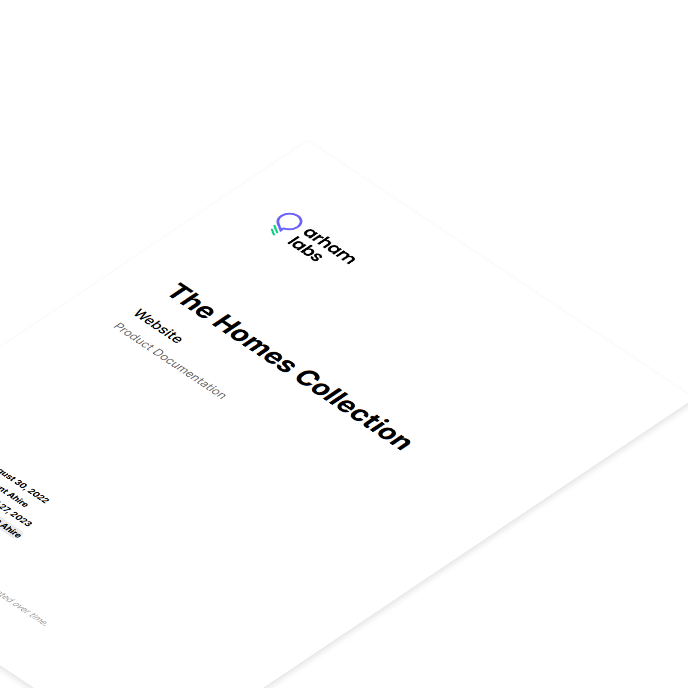
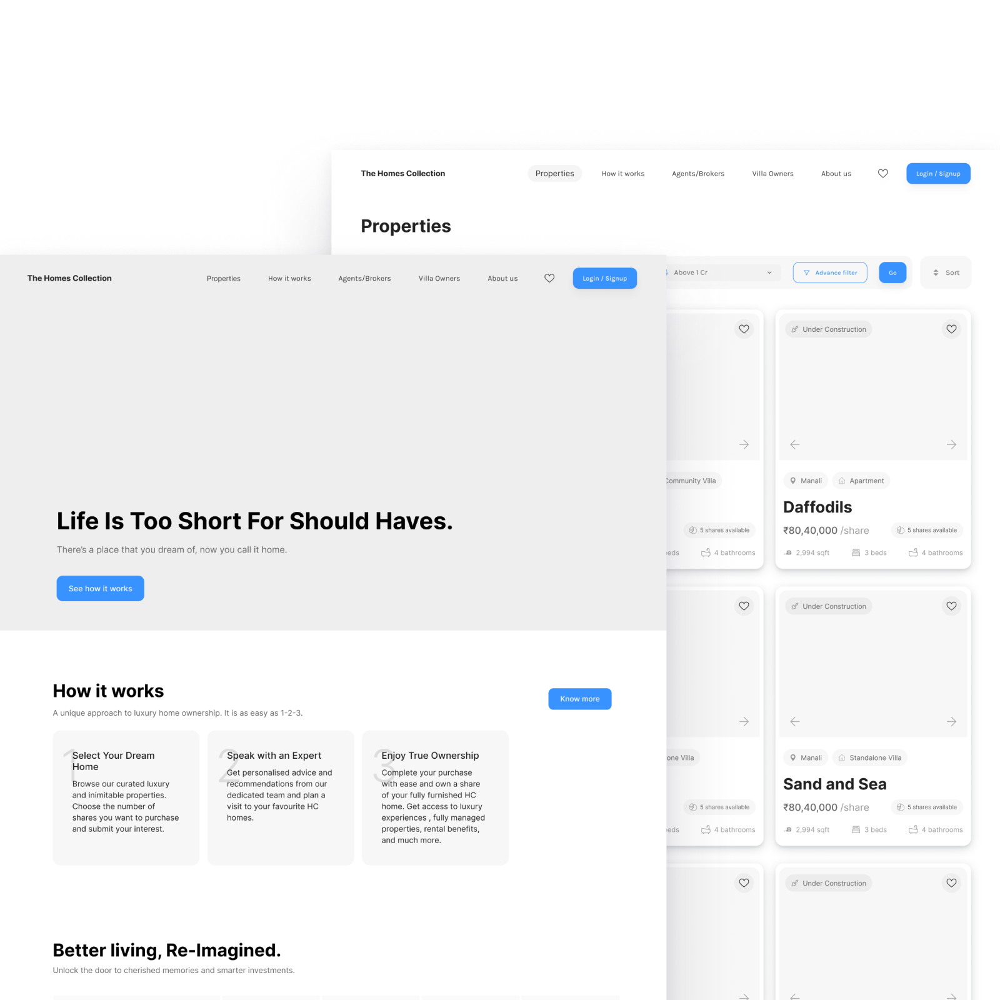
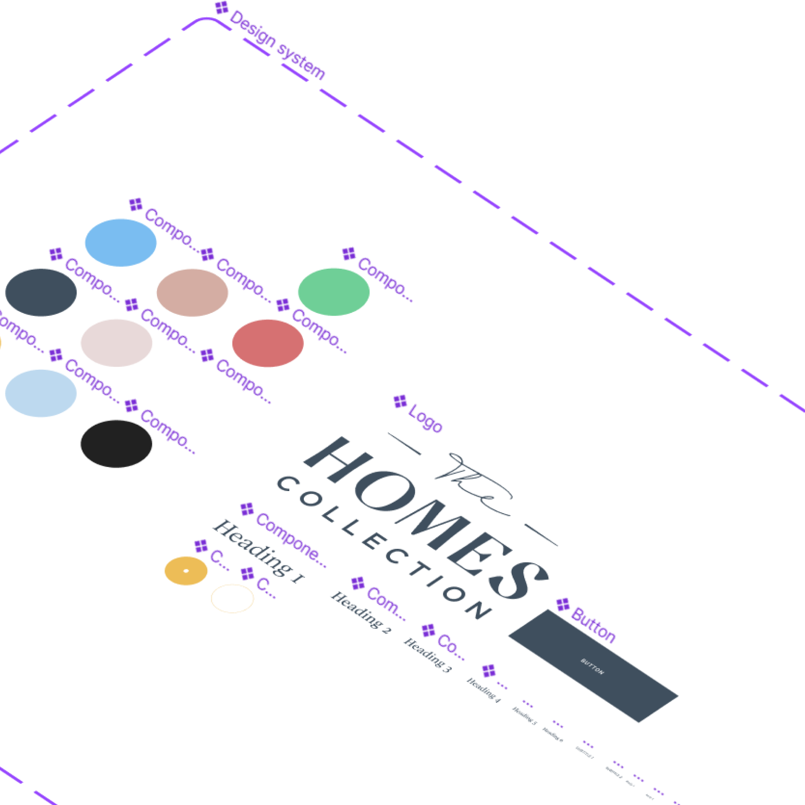
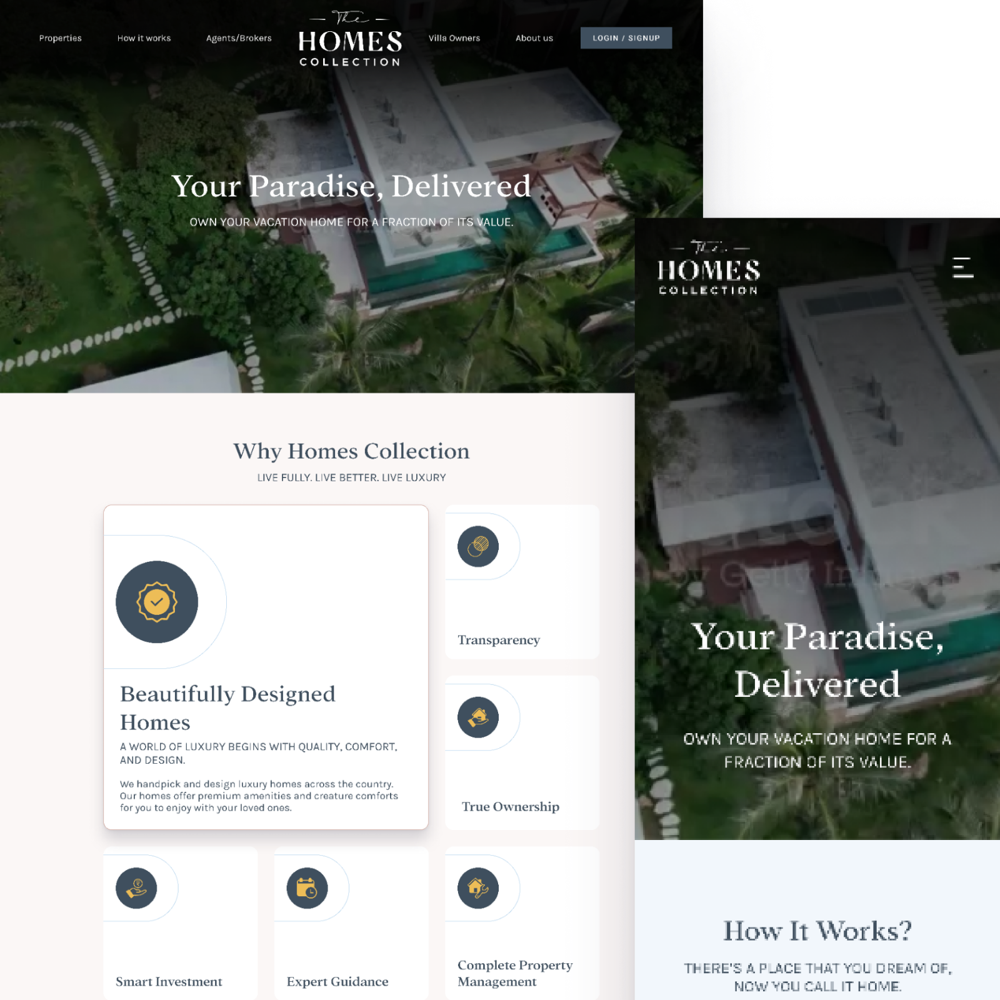
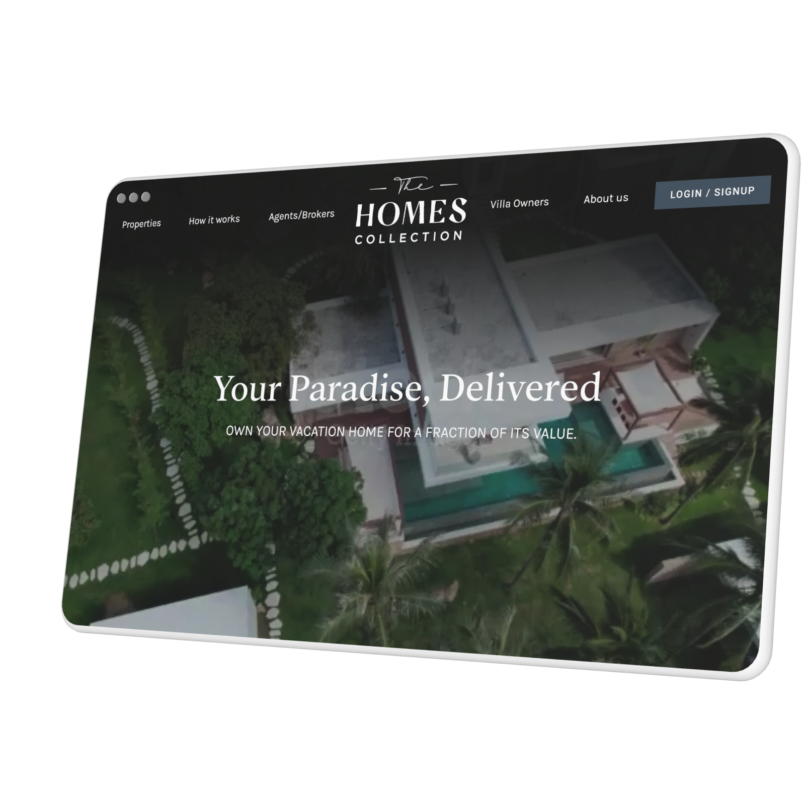
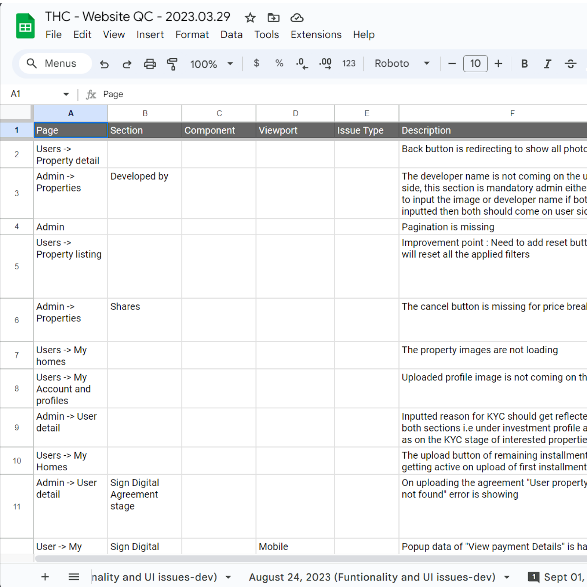

Revolutionizing fractional ownership platform for real estate investment
The Homes Collection is a platform showcasing luxury homes that brings the opportunity to co-own fully furnished holiday homes.
Strategic Problem Mapping
Real estate fractional ownership is a high-trust, high-ticket model. The challenge wasn't just building a "listing site"; it was solving for **investor hesitation** and **regulatory transparency** for an audience earning over INR 30 Lacs.
- Market Education: Converting traditional "whole-property" buyers to "fractional" owners via mental model shifting.
- Remote Confidence: Building a visual language that justifies NRI investment without physical site visits.
- The Admin Engine: Designing a multi-tenant dashboard to track deed transfers and fragmented ownership documents.
- Digitize Closing: Moving the "deed signing" and "share transfer" from physical paper to a governed digital flow.
- Brand Credibility: Establishing a "Luxury Concierge" aesthetic to match the price point.
- Inventory Management: Scalable admin system for property portfolios across multiple geographies.
To solve for trust, I implemented Progressive Validation. Instead of asking for investment upfront, the UX guides users through Virtual Tours, Legal FAQ sections, and "Fractional Calculators" to build cognitive confidence before the transaction.
Concept to Launch
1. Research & Discovery
- Analyzed the legal friction and cognitive barriers in fractional real estate deeds for NRI and High-Net-Worth investors.
- Conducted stakeholder mapping to align the diverging needs of Sales, Operations, and the End Investor.
- Outcome: Defined 'Transparency' and 'Concierge-Level Trust' as the primary design drivers over mere aesthetics.
2. Product Documentation
- Architected the Data Schema for property fragments, translating complex 1/8th ownership logic into digestible user data points.
- Mapped the end-to-end investment journey from initial 'Interest' through KYC to secure 'Share Transfer'.
- Outcome: Established a unified PRD bridging the luxury consumer portal and the administrative engine.

3. Mid-Fidelity Design
- Prototyped and tested the 'Fractional Calculator' mental model to build cognitive confidence prior to high-ticket transactions.
- Refined the information hierarchy to prioritize Virtual Tours, Legal FAQ sections, and verified property metrics.
- Outcome: Shifted the user experience paradigm from a casual 'Browse' workflow to a highly deliberate 'Verify & Invest' journey.

4. Design System
- Built a scalable design system heavily focused on 'Trust Cues', incorporating verified badges and contextual legal tooltips.
- Developed a highly flexible property card architecture to handle varying data densities and fragmented amenities grids.
- Outcome: Streamlined the design-to-development handoff process while ensuring absolute consistency across the platform.

5. High-Fidelity Design
- Implemented a premium black-and-gold visual direction deliberately crafted to command sophisticated, high-end authority.
- Integrated subtle, purposeful micro-interactions that elevate the digital experience to mirror a personalized 'Concierge' service.
- Outcome: Secured complete stakeholder approval by perfectly aligning the product UX with luxury brand positioning.

6. Development Handoff & Support
- Bridged the communication gap between the User Portal development and the Internal Admin Dashboard engineering teams.
- Oversaw the technical integration of immersive 3D Virtual Tours to ensure seamless performance for remote NRI verification.
- Outcome: Successfully facilitated an environment where complex front-end features integrated flawlessly with secure API architectures.

7. QA & Testing
- Conducted rigorous Quality Assurance testing to validate edge cases within the high-stakes transaction and ownership transfer flows.
- Ensured total cross-viewport responsiveness, specifically optimizing the luxury visualization on high-end mobile devices.
- Outcome: Deployed a highly robust, frictionless platform that successfully converted early interest into secure real estate investments.

My Role
Lead Designer
Stakeholder Interview, Research, Interaction Design, Visual Design, Prototyping